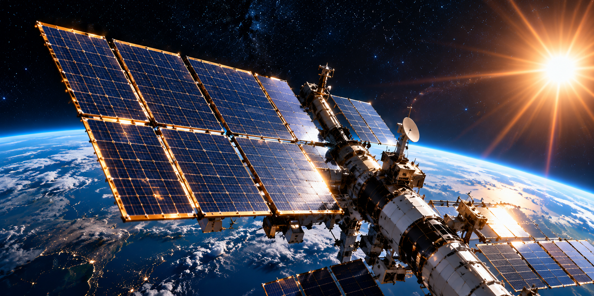
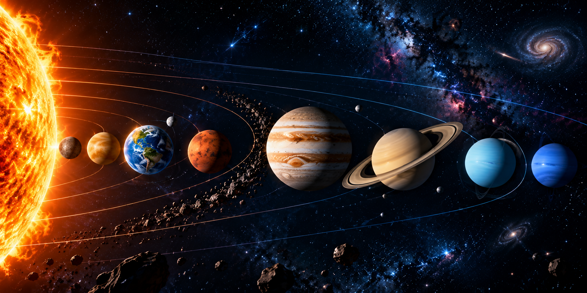
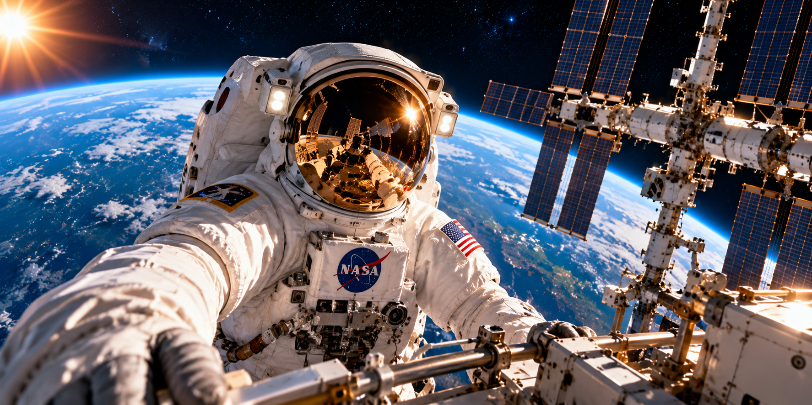
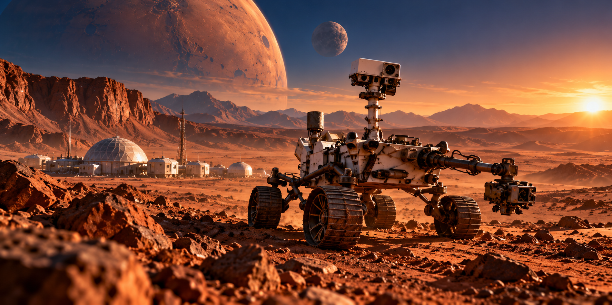

ASTRAQUEST DATA EXPLORER
EXPLORE NASA DATA
Access space science, explore the universe, and discover amazing facts about our solar system, planets, missions, spacecraft and more. Learn through interactive topics and start your space journey today.
Explore Topics




Explore responsibly. Topic links open NASA's public website. This page is an ASTRAQUEST learning interface, not an official NASA website.